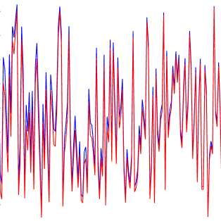
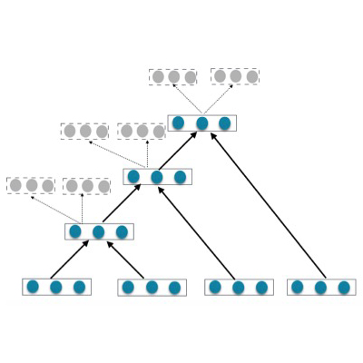
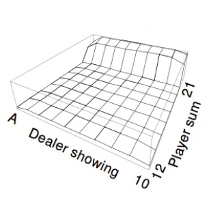
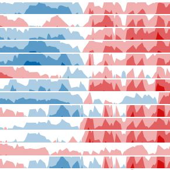

My current research is focused on Machine Learning, Computational Advertising, Cloud Computing, Distributed System and High Frequency Algorithmic Trading.
I am a postgraduate student at University College London (UCL) studying MSc in Computational Statistics and Machine Learning. I am now supervised by Dr. Jun Wang.
I did my BEng in Electrical and Electionic Engineering at the University of Nottingham. My supervisor was Dr. Kristof Cools.
During my BEng, I also obtained BSc in Information and Computing Science at Nanjing University of Aeronautics and Astronautics.
In 2011, I was an exchange student at the University of Hong Kong. The exchange programme was held by the Centre of Asian Studies.
-
 Real-Time Bidding Click-Through Rate Prediction University College London (UCL), MSc thesis. -
An Ensemble to Predict the Survival of Patients with Colon Cancer Based on the Optimal Model for Imputation
Working papers
-
The MTSP Optimal Model Suited for Local-Cross Repeat Path Chinese Control and Decision Conference (CCDC), Guiyang, China. -
Location of the Heavy Metal Pollution Source in the Soil Based on GA and BP Artificial Neural Network Hubei Agricultural Sciences. -
Face Orientation Recognition Based on Multiple Facial Feature Triangles International Conference on Control Engineering and Communication Technology (ICCECT), Liaoning, China. -
The SCM Control Electric Circuit Systems of a Drum Robot Based on Technique of Multithreading Machinery.
Publications
Theses
-
Mortar Element Method for the Two Dimensional Transverse Electric Boundary Integral Equation The University of Nottingham, BEng thesis. -
Scheduling the Rafting Trip Nanjing University of Aeronautics and Astronautics, MCM thesis.
Projects
-
 Semi-Supervised Recursive Autoencoders for Opinion Detection on Twitter -
 Application of Reinforcement Learning in Card Game Easy21 -
 Forecast Use of a City Bikeshare System -
Use Telematic Data to Identify a Driver Signature -
Classify the Sentiment of Sentences from the Rotten Tomatoes Dataset -
Predict Whether a Mobile Ad Will Be Clicked -
An Ensemble for Cancer Stage Classification -
Humanoid Gait Planning and Stability of Biped Robot